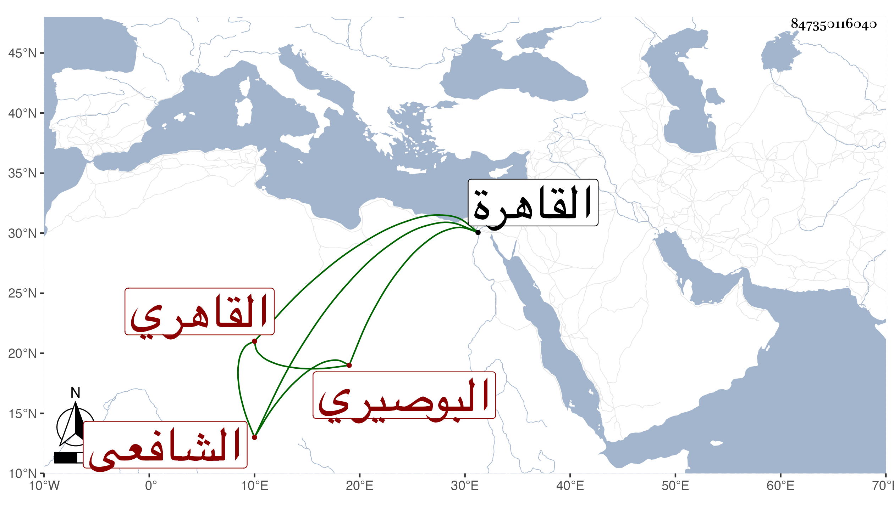

0902Sakhawi.DawLamic.ITO20230111-ara1.EIS1600.847350116040
Biography ID: 847350116040
7
علي بن محمد بن عمر نور الدين البوصيري القاهري الشافعي . نشأ في بلده فحفظ القرآن والتبريزي والجرومية وقرأ في التقسيم عند الجلال السمنودي وكذا أخذ عن الشمس بن كتيلة وغيره ، وقدم القاهرة فاشتغل قليلا عند أخي أبي بكر وملا علي في الفقه والنحو وغيرهما وتردد إلي في الإملاء وغيره ثم تشاغل بالتعليم لبني زين العابدين القادري وأخيه وابن عمهما وربما قرأ عليه في القرآن تغرى بردى القادري وفيه خير وسكون .
